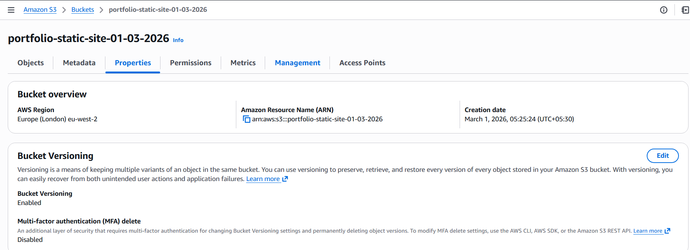
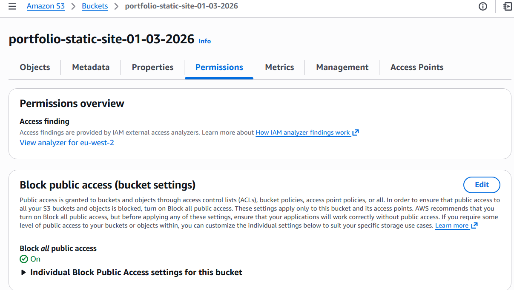
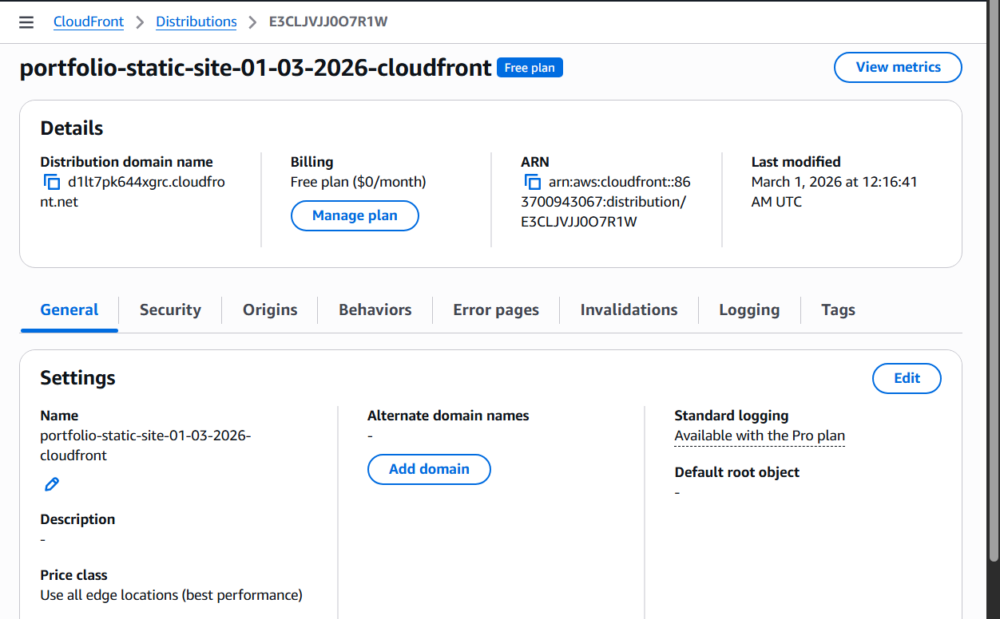
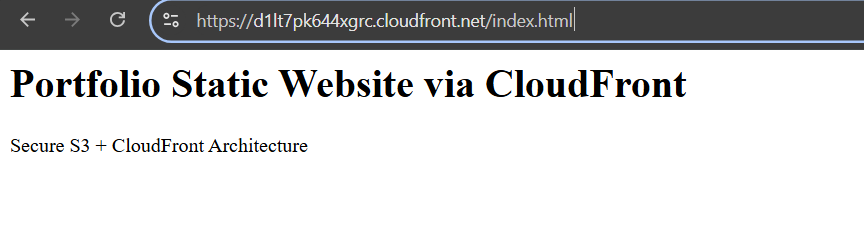
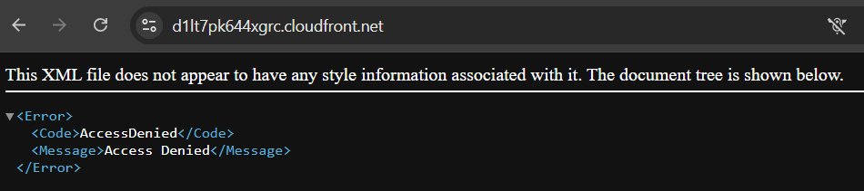
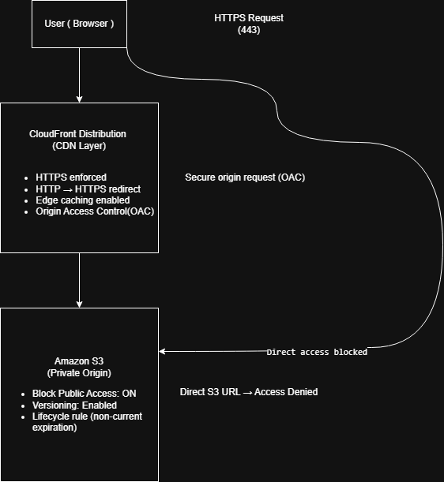

This project demonstrates a secure static website architecture using Amazon S3 as the storage layer and Amazon CloudFront as the content delivery network. The S3 bucket remains private while CloudFront serves the website globally through edge locations using Origin Access Control (OAC).
User → CloudFront CDN → Private S3 Bucket (Origin)
CloudFront handles HTTPS delivery, caching, and secure origin communication while the S3 bucket remains private with public access fully blocked.
Public access is disabled to ensure objects cannot be accessed directly from S3.
This prevents origin bypass attacks where users attempt to access the storage layer directly.
This confirms that the S3 bucket is secured and accessible only through the CloudFront distribution.






The deployment successfully implemented a secure static website architecture using Amazon S3 and CloudFront. By blocking direct S3 access and routing requests through CloudFront, the system ensures controlled origin access while benefiting from global edge caching and HTTPS delivery. This pattern is widely used for hosting static apps, documentation sites, and front-end web applications in production environments.